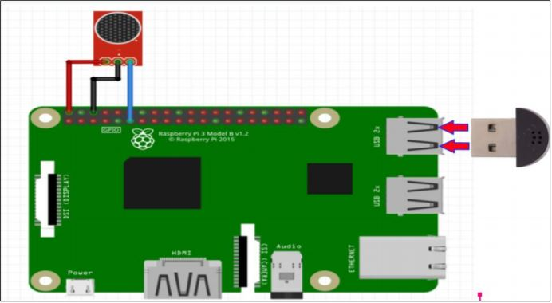
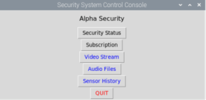
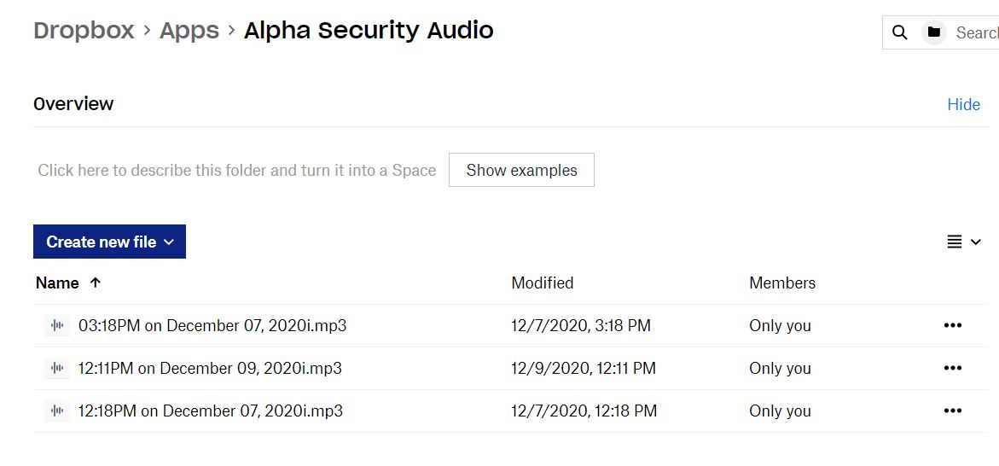

Raspberry Pi Security System
Alpha Security is a household security system that was built for my Computer Systems
Developement Project.
For this project my group of 3 other members and myself each had our own Raspberry Pi which we
used to create a fully functional
security system. This security system consisted of a sound sensor with a USB microphone, a
camera which streamed the footage
to Amazon Web Service's Kinesis Streaming service, a laser tripwire and a motion detector. My
job in this project was to work on the audio section and the server.
This included using a sound sensor and a USB microphone on one Raspberry Pi 4 and running a
Desktop Application on a seperate Raspberry Pi 4.

How this works is the USB microphone plugged into the Raspberry Pi is constantly recording 10
second
audio clips and saving them locally to the Raspberry Pi's SD card. The sound sensor is always on
standbye waiting for
unwanted noise. Once this unwanted noise has been sensed by the sound sensor, the Raspberry Pi
waits until the current audio file
is finished recording, then uploads the timestamped audio file to Alpha Security's very own
Dropbox Application folder using a generated API key. The sound sensor also uses an API key
to write an integer "1" to Thingspeak (an Internet of Things server made by Matlbab) and the
timestand of when the noise was detected.
This whole script is written in python and took advantage of the Dropbox module along
with many others such as sound recording modules and the GPIO module to be able to use the sound
sensor.
In addition to the audio section, I was also in charge of the server for the system. The server
consists of a Raspberry Pi connected
to a monitor that is running a Desktop App. This Desktop App makes use of Python's GUI module,
Tkinter.

The Desktop Application is able to read the data from Thingspeak for the sound sensor, laser
tripwire and the motion snesor. It then stores these data points and their corresponding
time stamp into a database using the SQLite3 module so that the user can view all of the sensor
data in the desktop app. Along with this, the GUI application sends SMS notifications to the
users using Alpha Security's Twilio app which would be of the current threat level
determined by a script written in Python on the desktop application. There are 3 different
threat levels. The desktop app also downloads all of the timestamped audio files from Dropbox to
the Raspberry Pi that is running the desktop application.

Once downloaded, the user is able to play the audio files as they wish on the desktop
application. The user can also watch the live video stream on the app which is streaming
directly from
AWS Kinesis.